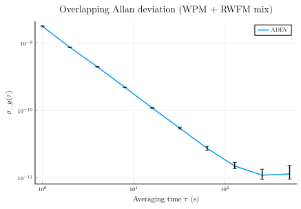

Computing the Allan deviation
adev returns a fully-populated StabilityResult: the σ_y(τ) point estimates, a power-law-noise classification per τ, the equivalent number of degrees of freedom, and χ² confidence bounds — all in one call. There's no separate "compute the noise type" step or "compute the CI" step; they're part of the default output.
This tutorial:
- Runs
adevon the WPM + RWFM fixture from Phase data and frequency data. - Walks through every field of the returned
StabilityResult. - Renders σ_y(τ) on log-log axes with χ² error bars via the bundled
RecipesBaseextension.
using SigmaTau
using RandomFixture
Same deterministic seed as the previous tutorial so the figures line up.
Random.seed!(20260509)
τ₀ = 1.0
N = 4096
wpm = randn(N) .* 1e-9
rwfm = cumsum(cumsum(randn(N) .* 1e-12))
x = wpm .+ rwfm
pd = PhaseData(x, τ₀)PhaseData{Float64}([-1.6343111539539689e-9, -1.1780042604019418e-9, -7.186485805871439e-10, -2.1347474920668491e-10, 1.892936594287127e-11, 5.085984933224569e-10, 2.765483270645613e-10, 3.9541393498485826e-11, -1.679247998749378e-9, -1.480899572179553e-9 … -1.0577049397434875e-7, -1.0538972855454432e-7, -1.0471307873630643e-7, -1.0360264174022618e-7, -1.0647612045365271e-7, -1.0552556205367625e-7, -1.0365718611120846e-7, -1.0345180935104099e-7, -1.0459867405959992e-7, -1.0486817874361955e-7], 1.0)Run adev on an octave-spaced τ-grid
The averaging factor m selects which τ values get sampled — the package multiplies by τ₀ internally to produce result.tau. An octave grid (m = 1, 2, 4, …) covers a wide range with few points and matches the convention in NIST SP1065.
m_grid = [1, 2, 4, 8, 16, 32, 64, 128, 256, 512]
result = adev(pd, m_grid)StabilityResult(:adev, [1.0, 2.0, 4.0, 8.0, 16.0, 32.0, 64.0, 128.0, 256.0, 512.0], [1.775725715136308e-9, 8.664184363111723e-10, 4.4487455977874545e-10, 2.2076739763559966e-10, 1.0892960423689975e-10, 5.461021151308419e-11, 2.7397676944398212e-11, 1.5007006783200177e-11, 1.0964633949499148e-11, 1.1441585732652341e-11], [:WHPM, :WHPM, :WHPM, :WHPM, :WHPM, :FLPM, :WHFM, :WHFM, :FLFM, :WHFM], [1.7489667581699244e-9, 8.53359795289871e-10, 4.3816704041704135e-10, 2.1743645093525526e-10, 1.0728373079506859e-10, 5.300535008517925e-11, 2.5584557161409037e-11, 1.365569406650421e-11, 9.482621216451012e-12, 9.545811206330286e-12], [1.8037509507570276e-9, 8.800951488616312e-10, 4.5189966712180194e-10, 2.2425617552027327e-10, 1.1065358085023952e-10, 5.637016536255242e-11, 2.9659994422644077e-11, 1.6859021456970495e-11, 1.3462807660334827e-11, 1.5232824465291816e-11], [2105.750237310849, 2104.9862554475358, 2103.4584918326245, 2100.403768506056, 2094.297565374211, 529.3198133988998, 92.32475367374505, 45.75918521242468, 16.96069755438317, 9.818132448050493])What's in the result?
Every relevant quantity is on the returned struct — there's no follow-up call needed for noise classification, EDF, or confidence bounds.
result.tau # τ values (s)10-element Vector{Float64}:
1.0
2.0
4.0
8.0
16.0
32.0
64.0
128.0
256.0
512.0result.dev # σ_y(τ) point estimates10-element Vector{Float64}:
1.775725715136308e-9
8.664184363111723e-10
4.4487455977874545e-10
2.2076739763559966e-10
1.0892960423689975e-10
5.461021151308419e-11
2.7397676944398212e-11
1.5007006783200177e-11
1.0964633949499148e-11
1.1441585732652341e-11result.noise_type # power-law classification per τ10-element Vector{Symbol}:
:WHPM
:WHPM
:WHPM
:WHPM
:WHPM
:FLPM
:WHFM
:WHFM
:FLFM
:WHFM(:WHPM, :FLPM, :WHFM, :FLFM, :RWFM)
result.edf # equivalent degrees of freedom10-element Vector{Float64}:
2105.750237310849
2104.9862554475358
2103.4584918326245
2100.403768506056
2094.297565374211
529.3198133988998
92.32475367374505
45.75918521242468
16.96069755438317
9.818132448050493(Greenhall–Riley formula, used by the χ² CI)
result.ci_lower # lower χ² confidence bound (default 95%)10-element Vector{Float64}:
1.7489667581699244e-9
8.53359795289871e-10
4.3816704041704135e-10
2.1743645093525526e-10
1.0728373079506859e-10
5.300535008517925e-11
2.5584557161409037e-11
1.365569406650421e-11
9.482621216451012e-12
9.545811206330286e-12result.ci_upper # upper χ² confidence bound10-element Vector{Float64}:
1.8037509507570276e-9
8.800951488616312e-10
4.5189966712180194e-10
2.2425617552027327e-10
1.1065358085023952e-10
5.637016536255242e-11
2.9659994422644077e-11
1.6859021456970495e-11
1.3462807660334827e-11
1.5232824465291816e-11result.deviation_type # which deviation kernel produced this result:adevSkipping CI computation (when you just want the point estimates) is a single keyword:
adev(pd, m_grid; calc_ci = false)result.ci_lower, result.ci_upper, and result.edf come back empty in that mode.
The plot recipe
SigmaTau ships a RecipesBase extension (ext/SigmaTauRecipesBaseExt.jl); loading any Plots-compatible backend brings in a log-log τ–σ recipe with χ² error bars sourced from result.ci_lower / ci_upper.
using Plots
plot(result;
title = raw"Overlapping Allan deviation (WPM + RWFM mix)",
xlabel = raw"Averaging time \(\tau\) (s)",
ylabel = raw"\(\sigma_y(\tau)\)",
legend = :topright,
lw = 1.5)
Reading the curve
The slope of σy(τ) on log-log axes encodes the dominant noise type. At short τ the WPM contribution dominates and the curve falls as τ⁻¹; past a knee, the RWFM contribution takes over and rises as τ^(1/2). The `result.noisetypevector tracks this regime change automatically; in the test suite,test/stab/runtests.jl(Stable32 cross-validation`) verifies these σ_y values match Stable32's reference output to four-five significant figures across the same fixture.